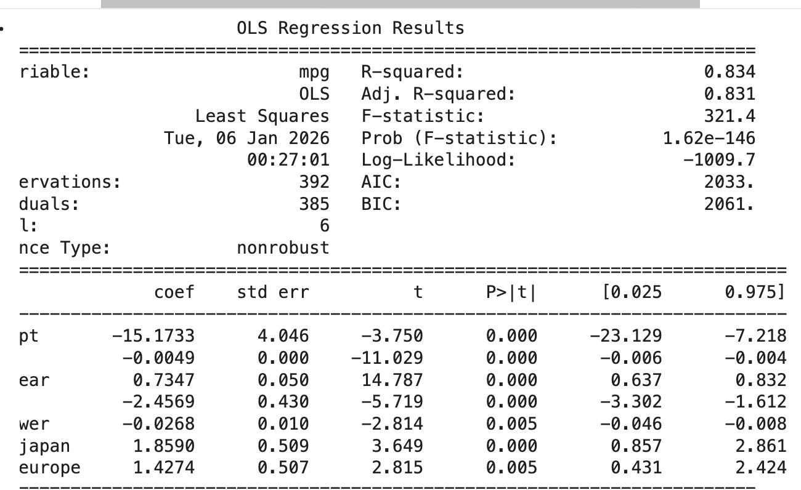
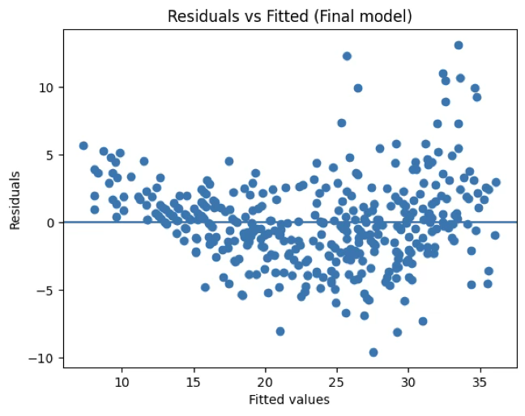

MLDL 예측방법. 2.회귀분석
Chapter 2. 고전적 선형회귀모형
1. 선형회귀모형 개념
가장 기본적인 예측모형은 선형회귀모형이다. 선형회귀는 설명변수와 반응변수 사이의 관계를 비교적 단순한 수학적 구조로 표현하면서도, 예측과 추론이라는 두 목적을 동시에 수행할 수 있는 대표적인 통계 모형이다.
다중선형회귀모형은 일반적으로 다음과 같이 표현된다. \(Y = \beta_{0} + \beta_{1}X_{1} + \cdots + \beta_{p}X_{p} + \varepsilon\), 여기서 Y는 반응변수, \(X_{1},\ldots,X_{p}\)는 설명변수, \(\beta_{0},\beta_{1},\ldots,\beta_{p}\)는 미지의 회귀계수이며, \(\varepsilon\)는 평균이 0인 오차항이다. 이 모형에서 오차항은 설명변수로 설명되지 않는 변동을 나타내며, 확률적 불확실성을 수학적으로 표현하는 역할을 한다.
선형회귀의 핵심적인 특징은 예측 문제를 모수적 함수 추정 문제로 단순화한다는 점이다. 즉, 무한히 많은 가능한 함수 중에서 \(f(x) = \beta_{0} + \beta^{\top}x\)와 같은 유한차원 함수 공간만을 고려함으로써, 예측 문제를 소수의 모수 \(\beta\)를 추정하는 문제로 환원한다. 이로 인해 선형회귀는 계산적으로 효율적이며, 해석 가능한 구조를 갖는다.
이러한 단순성은 선형회귀의 가장 큰 장점이기도 하다. 각 회귀계수 \(\beta_{j}\)는 다른 변수들이 고정된 상태에서 \(X_{j}\)가 한 단위 증가할 때 반응변수의 평균이 얼마나 변화하는지를 나타내는 명확한 의미를 가진다. 또한 최소제곱추정량은 수학적으로 명시적인 형태를 가지며, 그 통계적 성질(불편성, 불편성을 갖는 추정량 중 최소분산, 신뢰구간, 가설검정 추론)을 이론적으로 정확히 분석할 수 있다.
선형회귀모형은 이러한 이유로 통계학과 데이터 분석 전반에서 가장 널리 사용되는 예측 및 추론 도구로 자리 잡아 왔다. 그러나 이러한 활용 가능성은 임의적인 것이 아니라, 모형이 전제하는 몇 가지 핵심 가정이 충족될 때 비로소 보장된다. 선형성, 독립성, 등분산성, 그리고 추론 목적에서의 정규성 가정은 단순한 기술적 조건이 아니라, 회귀계수의 해석 가능성과 예측 결과의 신뢰성을 뒷받침하는 논리적 기반을 이룬다.
즉, 선형회귀는 ”항상 잘 작동하는 만능 모형”이 아니라, 명확한 가정 하에서 안정성과 해석력을 제공하는 모형이다. 이러한 가정을 이해하고 그 의미를 정확히 인식하는 것은, 선형회귀를 예측 도구로 올바르게 활용하고, 나아가 더 유연한 머신러닝 모형으로 확장해 나가기 위한 출발점이 된다.
2. 선형회귀모형 가정
(1) 기본 가정
1. 선형성(linearity)
선형성 가정이란, 설명변수 X가 주어졌을 때 반응변수의 조건부 기댓값이 설명변수의 선형결합으로 표현될 수 있다는 것을 의미한다.
\[\mathbb{E}(Y \mid X) = \beta_{0} + \beta_{1}X_{1} + \cdots + \beta_{p}X_{p}\]
이 가정이 필요한 이유는, 선형회귀가 본질적으로 제한된 함수 공간 안에서 조건부 평균을 근사하는 방법이기 때문이다. 만약 실제 조건부 평균 함수가 강한 비선형 구조를 가진다면, 선형모형은 구조적으로 이를 표현할 수 없으며, 이는 체계적인 편향(bias)으로 이어진다.
중요한 점은, 선형성 가정이 반드시 변수 자체에 대한 선형성을 의미하지는 않는다는 것이다. 설명변수를 로그 변환하거나 다항식 항을 추가하는 경우에도, 모형은 여전히 계수에 대해 선형이며 선형회귀의 틀 안에 있다. 따라서 선형성 가정은 ”현상을 단순하게 본다”기보다는, 모형을 통해 표현 가능한 함수 형태를 명시적으로 제한하는 선택으로 이해하는 것이 바람직하다.
2. 독립성(independence)
독립성 가정은 오차항들이 서로 독립이라는 조건이다.
\[\varepsilon_{1},\varepsilon_{2},\ldots,\varepsilon_{n}\text{are independent}\]
이 가정이 중요한 이유는, 회귀계수의 분산 추정과 통계적 추론이 관측치 간 독립성을 전제로 이루어지기 때문이다. 오차가 서로 상관되어 있을 경우, 표준오차는 실제보다 과소 또는 과대 추정될 수 있으며, 이는 신뢰구간과 가설검정 결과를 왜곡한다.
특히 시계열 자료나 공간 자료에서는 독립성 가정이 쉽게 깨진다. 이 경우에도 회귀계수 자체는 계산될 수 있지만, 그 불확실성에 대한 해석은 더 이상 신뢰할 수 없게 된다. 즉, 독립성 가정은 계수의 크기보다 그 불확실성을 정확히 평가하기 위해 필요하다고 볼 수 있다.
3. 등분산성(homoscedasticity)
등분산성 가정은 오차항의 분산이 설명변수의 값과 무관하다는 조건이다.
\[\text{Var}(\varepsilon \mid X) = \sigma^{2}\]
이 가정이 필요한 이유는, 선형회귀에서 최소제곱추정량이 효율적인 추정량이 되기 위해서이다. 등분산성이 만족될 경우, 최소제곱법은 모든 선형 불편추정량 중 분산이 가장 작은 추정량이 된다(Gauss–Markov 정리).
등분산성이 깨지는 경우, 회귀계수 추정치 자체는 여전히 불편하지만, 분산이 불필요하게 커지거나 표준오차가 왜곡된다. 이는 추론의 신뢰성을 약화시키며, 예측구간의 폭 또한 부정확해진다. 따라서 등분산성 가정은 추정의 효율성과 예측 불확실성의 정확한 정량화를 위해 중요하다.
4. 정규성(normality) (추론 목적일 경우)
정규성 가정은 오차항이 정규분포를 따른다는 가정이다.
\[\varepsilon \sim \mathcal{N}(0,\sigma^{2})\]
이 가정은 예측 자체보다는 통계적 추론을 위해 필요하다. 오차가 정규분포를 따른다는 가정 하에서, 회귀계수의 표본분포 역시 정규분포를 따르게 되며, 이는 t-검정, F-검정, 신뢰구간과 같은 고전적 추론 도구의 이론적 근거가 된다.
중요한 점은, 데이터의 크기가 충분히 클 경우 중심극한정리에 의해 정규성 가정의 중요성이 감소한다는 것이다. 또한 예측 문제에서는 정규성이 충족되지 않더라도, 검증오차나 테스트오차 기반 평가가 가능하다. 따라서 정규성 가정은 추론 중심 분석에서 핵심적이며, 예측 중심 분석에서는 필수 조건은 아니다.
5. 가정 위반의 현실적 의미
이러한 가정이 모두 만족될 경우, 선형회귀는 해석 가능하고 안정적인 예측 도구가 된다. 각 계수는 명확한 의미를 가지며, 불확실성 또한 이론적으로 정량화할 수 있다. 그러나 현실 데이터에서는 비선형성, 다중공선성, 이분산성, 고차원 문제 등이 빈번하게 발생한다.
이때 중요한 점은, 가정 위반이 곧 ”분석 불가능”을 의미하지는 않는다는 것이다. 대신 이는 선형회귀가 가정한 함수 공간과 데이터 구조가 잘 맞지 않음을 시사하는 신호로 해석해야 한다. 이러한 상황에서 규제 회귀, 트리 기반 모형, 딥러닝과 같은 방법은 가정을 완화하거나 다른 방식으로 일반화 성능을 확보하는 대안이 된다.
결론적으로, 선형회귀의 가정은 단순한 제약 조건이 아니라, 해석 가능성과 안정성을 얻기 위해 지불하는 대가이다. 예측 문제에서는 이 대가가 적절한지, 또는 더 유연한 함수 공간이 필요한지를 검증오차를 통해 판단하는 것이 핵심이다.
(2) 선형회귀 실패
선형회귀모형은 단순하고 해석 가능한 구조를 가지지만, 그 성능과 신뢰성은 모형이 전제하는 가정이 얼마나 현실 데이터와 잘 맞는가에 크게 의존한다. 가정이 심각하게 위반될 경우, 선형회귀는 더 이상 안정적인 예측 도구나 신뢰할 수 있는 추론 도구로 기능하지 못한다. 따라서 선형회귀가 ”실패한다”는 것은 모형이 틀렸다는 의미라기보다는, 데이터가 선형회귀가 가정한 함수 공간과 맞지 않음을 드러내는 신호로 이해하는 것이 바람직하다.
1. 비선형성: 구조적 편향의 발생
선형회귀의 가장 근본적인 가정은 조건부 평균이 설명변수의 선형결합으로 표현될 수 있다는 것이다. 그러나 실제 데이터에서 반응변수와 설명변수의 관계가 강한 비선형 구조를 가진 경우, 선형회귀는 이를 표현할 수 없다. 이때 발생하는 문제는 단순한 오차 증가가 아니라, 체계적인 편향(structural bias) 이다.
비선형성이 존재하면, 아무리 데이터의 양이 많아도 선형회귀의 예측은 특정 방향으로 지속적으로 틀리게 된다. 이는 잔차가 설명변수의 값에 따라 패턴을 보이는 형태로 나타나며, 잔차–설명변수 산점도에서 곡선 구조가 관측되는 것이 대표적인 신호이다. 이러한 경우 선형회귀는 데이터의 본질적인 구조를 포착하지 못하고 있으며, 함수 공간 자체의 확장이 필요함을 시사한다.
2. 독립성 위반: 불확실성의 왜곡
관측치 간 오차가 서로 독립이라는 가정이 위반되는 경우, 회귀계수의 추정값 자체보다도 그 불확실성의 평가가 문제를 일으킨다. 시계열 자료나 공간 자료에서는 인접한 관측치들이 서로 상관되어 있는 경우가 많으며, 이때 표준오차는 실제보다 과소 추정되는 경향이 있다.
이러한 상황에서는 회귀계수가 통계적으로 매우 유의해 보이더라도, 이는 독립성 위반으로 인한 착시일 가능성이 크다. 즉, 모형이 예측값을 제공할 수는 있지만, 그 신뢰구간이나 가설검정 결과는 신뢰하기 어렵다. 독립성 위반은 선형회귀가 추론 도구로서 실패하는 대표적인 경우라 할 수 있다.
3. 이분산성: 효율성 상실과 예측 불확실성 문제
오차의 분산이 설명변수의 값에 따라 달라지는 이분산성은, 선형회귀가 제공하는 추정의 효율성을 약화시킨다. 이분산성이 존재할 경우 최소제곱추정량은 여전히 불편하지만, 더 이상 최소 분산을 가지는 추정량은 아니다.
이분산성의 신호는 잔차의 산포가 특정 구간에서 넓어지거나 좁아지는 패턴으로 나타난다. 이러한 경우 예측구간은 실제보다 과도하게 좁거나 넓게 설정될 수 있으며, 이는 예측의 불확실성을 잘못 전달하게 된다. 즉, 평균 예측값 자체보다 예측의 신뢰도가 훼손된다.
4. 다중공선성: 해석 가능성의 붕괴
설명변수들 사이에 강한 상관관계가 존재하는 다중공선성은, 선형회귀의 해석 가능성을 크게 떨어뜨린다. 이 경우 회귀계수는 데이터의 작은 변화에도 크게 흔들리며, 계수의 부호나 크기가 직관과 다르게 나타날 수 있다.
다중공선성이 존재하면 예측값 자체는 비교적 안정적인 경우도 많지만, 개별 계수의 의미는 모호해진다. 즉, 선형회귀는 예측 도구로서는 작동하지만 추론 도구로서는 실패할 수 있다. 이는 예측과 추론의 목적 차이를 다시 한 번 강조하는 사례이다.
5. 고차원 문제: 과적합과 불안정성
설명변수의 수가 관측치 수에 비해 많아지는 고차원 상황에서는, 선형회귀의 기본 가정 이전에 추정 자체가 불안정해진다. p가 n에 가까워지거나 이를 초과하면, 최소제곱해는 존재하지 않거나 극단적으로 불안정해진다.
이러한 상황에서 선형회귀는 훈련 데이터에는 잘 맞지만 새로운 데이터에 대해서는 예측 성능이 급격히 저하되는 과적합을 보인다. 이는 함수 공간이 데이터 양에 비해 지나치게 크다는 신호이며, 규제 회귀나 차원 축소가 필요함을 명확히 보여준다.
(3) 선형회귀 실패의 의미
중요한 점은, 선형회귀의 실패가 곧 분석의 실패를 의미하지는 않는다는 것이다. 오히려 이는 데이터가 더 풍부한 구조를 가지고 있음을 알려주는 진단 신호이다. 가정 위반은 모델을 버려야 한다는 메시지가 아니라, 함수 공간을 확장하거나, 규제를 도입하거나, 다른 예측 프레임으로 이동해야 한다는 संकेत이다.
결론적으로 선형회귀는 언제나 출발점으로서의 가치를 지닌다. 그러나 잔차 패턴, 불안정한 계수, 과도한 민감성 등은 모두 ”이제 더 유연한 예측모형이 필요하다”는 신호로 해석되어야 한다. 이러한 인식 위에서 규제 회귀, 트리 기반 모형, 딥러닝으로의 확장이 자연스럽게 이어진다.
(5) 선형회귀에서 머신러닝으로의 확장 경로
선형회귀는 예측모형 설계의 출발점이다. 단순한 수학적 구조와 명확한 해석 가능성 덕분에, 선형회귀는 예측과 추론을 동시에 이해할 수 있는 가장 기본적인 틀을 제공한다. 그러나 현실 데이터가 점점 복잡해지고 고차원화됨에 따라, 선형회귀가 전제하는 가정과 함수 공간은 많은 경우 충분하지 않게 된다. 머신러닝으로의 확장은 이러한 한계를 인식하는 데서 자연스럽게 시작된다.
1. 출발점: 선형회귀라는 제한된 함수 공간
선형회귀는 예측 문제를 \(f(x) = \beta_{0} + \beta^{\top}x\)와 같은 유한차원 선형 함수 공간에서 해결한다. 이는 예측 문제를 소수의 모수 추정 문제로 환원시켜 주며, 안정성과 해석력을 제공한다. 그러나 이 선택은 동시에 강한 제약이기도 하다. 실제 조건부 평균 함수가 비선형 구조를 가지거나, 변수 간 복잡한 상호작용이 존재할 경우, 선형회귀는 구조적으로 편향된 예측을 낳는다. 즉, 선형회귀는 ”데이터가 단순할 것”을 전제로 한 예측모형이다.
2. 첫 번째 확장: 규제를 통한 안정화
선형회귀의 가장 흔한 실패는 비선형성보다는 불안정성에서 먼저 나타난다. 다중공선성이나 고차원 문제로 인해 계수가 폭주하고 예측이 흔들리는 경우, 함수 형태를 바꾸기보다는 먼저 함수 공간의 크기를 제어할 필요가 있다.
규제 회귀는 이 문제를 해결하는 첫 번째 확장이다. Ridge, Lasso, Elastic Net은 모두 선형 구조를 유지하면서 계수의 크기를 제한함으로써, 예측함수의 복잡도를 조절한다. 이는 선형회귀를 예측 중심으로 재해석한 결과이며, 통계적 회귀에서 머신러닝적 사고로 이동하는 중요한 전환점이다.
이 단계에서 이미 관심의 중심은 회귀계수의 유의성에서 벗어나, 검증오차와 일반화 성능으로 이동한다.
3. 두 번째 확장: 특징공간의 비선형화
규제로도 해결되지 않는 문제가 있다. 반응변수와 설명변수의 관계 자체가 비선형일 경우, 계수의 안정성보다 표현력의 한계가 더 큰 문제가 된다. 이때 등장하는 접근이 특징공간의 확장이다.
다항회귀, 스플라인, 커널 방법 등은 입력변수 X를 비선형 변환한 뒤, 그 변환된 공간에서 선형모형을 적용한다. 이는 ”모형은 선형이되, 데이터 표현은 비선형”이라는 전략이다. 이 단계에서 예측모형은 점차 추론 중심의 틀을 벗어나, 함수 근사 관점으로 이동한다.
4. 세 번째 확장: 구조적 비선형 모형
특징공간 확장조차 명시적 설계에 의존한다는 한계를 가진다. 이에 대한 대안으로 등장한 것이 트리 기반 모형이다. 결정트리는 입력 공간을 분할하여 각 영역에서 단순한 예측을 수행하며, 변수 간 상호작용과 비선형성을 자동으로 포착한다.
랜덤 포레스트와 그래디언트 부스팅은 단일 트리의 불안정성을 앙상블로 해결하며, 예측 성능을 크게 향상시킨다. 이 단계에서 예측모형은 더 이상 명시적인 수식 형태를 갖지 않으며, 해석 가능성보다 성능과 안정성이 우선시된다.
5. 네 번째 확장: 표현 학습으로서의 딥러닝
머신러닝 확장의 최종 단계는 신경망 기반 모형이다. 딥러닝은 입력변수의 표현 자체를 데이터로부터 학습하며, 다층 비선형 변환을 통해 매우 넓은 함수 공간을 구성한다. 이론적으로 신경망은 임의의 연속함수를 근사할 수 있으며, 이는 선형회귀에서 출발한 함수 근사 문제의 극단적인 확장이라 할 수 있다.
이 단계에서는 모형 가정보다 데이터 양, 최적화 알고리즘, 규제 전략이 성능을 좌우한다. 예측은 완전히 데이터 주도적(data-driven) 과정이 된다.
6. 확장의 핵심 논리
선형회귀에서 머신러닝으로의 확장은 단절이 아니라 연속이다. 이 경로를 관통하는 공통 논리는 다음과 같다.
- 예측은 조건부 평균 함수의 근사 문제이다.
- 실패의 원인은 대부분 함수 공간과 데이터 구조의 불일치이다.
- 확장은 함수 공간을 점진적으로 넓히는 과정이다.
- 넓어진 함수 공간은 규제와 검증으로 통제된다.
즉, 머신러닝은 선형회귀를 부정하는 것이 아니라, 선형회귀의 한계를 체계적으로 확장한 결과이다.
선형회귀는 예측모형 설계의 시작점이며, 규제 회귀는 그 첫 번째 보완이다. 비선형 특징 확장과 트리 기반 모형은 표현력을 확장하고, 딥러닝은 표현 학습 자체를 자동화한다. 이 모든 과정은 ”더 복잡한 모형으로 가는 길”이 아니라, 데이터가 요구하는 만큼 함수 공간을 확장하는 합리적 선택의 연속이다.
이러한 관점에서 머신러닝은 새로운 통계가 아니라, 예측 문제를 끝까지 밀어붙인 통계적 사고의 확장판이라고 이해할 수 있다.
3. 회귀계수 추론
(1) 최소제곱 추정
다중선형회귀모형에서는 하나의 반응변수가 여러 설명변수의 선형결합으로 표현된다. 관측값 \(i = 1,\ldots,n\)에 대해 모형은 다음과 같이 주어진다.
\(y_{i} = \beta_{0} + \beta_{1}x_{i1} + \beta_{2}x_{i2} + \cdots + \beta_{p}x_{ip} + \varepsilon_{i}\), \(\mathbf{y} = \mathbf{X}\mathbf{\beta} + \mathbf{\varepsilon}\)
여기서 \(\beta_{0},\beta_{1},\ldots,\beta_{p}\)는 미지의 회귀계수이며, 실제 자료 분석에서는 이 계수들을 표본으로부터 추정해야 한다.
회귀계수 추정방법은 최소제곱법이며 관측값과 모형이 예측한 값 사이의 차이, 즉 잔차의 제곱합을 최소화하는 계수 벡터를 찾는 방법이다. 이를 수식으로 나타내면, 다음의 잔차제곱합을 최소화하는 \(\beta_{0},\beta_{1},\ldots,\beta_{p}\)를 구하는 문제로 정식화된다.
\[RSS = \overset{n}{\sum_{i = 1}}\left( y_{i} - \beta_{0} - \beta_{1}x_{i1} - \beta_{2}x_{i2} - \cdots - \beta_{p}x_{ip} \right)^{2}\]
\(S(\mathbf{\beta}) = (\mathbf{y} - \mathbf{X}\mathbf{\beta})^{\top}(\mathbf{y} - \mathbf{X}\mathbf{\beta})\) ↔︎ \(\widehat{\mathbf{\beta}} = (\mathbf{X}^{\top}\mathbf{X})^{- 1}\mathbf{X}^{\top}\mathbf{y}\)
다중회귀모형에서 각 회귀계수 \(\beta_{j}\)는 다른 모든 설명변수가 고정된 상태에서 \(x_{j}\)가 한 단위 증가할 때 반응변수의 평균이 얼마나 변하는지를 나타낸다. 즉, 단순회귀와 달리 각 계수는 조건부 효과를 의미한다.
이러한 해석은 설명변수들 간의 상관관계가 존재할 때 특히 중요하다. 설명변수들이 서로 강하게 연관되어 있는 경우, 단순한 상관계수와 회귀계수의 부호나 크기가 일치하지 않을 수도 있다. 이는 다중회귀모형이 각 변수의 독립적인 기여도를 분리하여 추정하기 때문이다.
(2) 최소제곱 추정치 성질
오차항이 평균 0, 분산 \(\sigma^{2}\), 서로 독립이라는 가정하에서 최소제곱추정량은 다음과 같은 성질을 가진다.
첫째, \(\widehat{\mathbf{\beta}}\)는 불편추정량이다. \(E(\widehat{\mathbf{\beta}}) = \mathbf{\beta}\)
둘째, \(\widehat{\mathbf{\beta}}\)의 분산-공분산 행렬은 \(Var(\widehat{\mathbf{\beta}}) = \sigma^{2}(\mathbf{X}^{\top}\mathbf{X})^{- 1}\)로 주어진다. 이 결과는 회귀계수의 표준오차, 신뢰구간, 가설검정의 기초가 된다.
셋째, 오차항이 정규분포를 따른다면, \(\widehat{\mathbf{\beta}}\) 역시 다변량 정규분포를 따른다. 이 경우 정확한 t-검정과 F-검정을 수행할 수 있다.
(3) 회귀계수의 표준오차와 t-검정
\(\widehat{\mathbf{\beta}}\)의 분산-공분산 행렬은 \(Var(\widehat{\mathbf{\beta}}) = \sigma^{2}(\mathbf{X}^{\top}\mathbf{X})^{- 1}\)은 추정량의 분산을 의미하며, 그 제곱근이 해당 회귀계수의 표준오차가 된다. 실제 분석에서는 \(\sigma^{2}\)를 알 수 없으므로, 잔차를 이용해 다음과 같이 추정한다.
\({\widehat{\sigma}}^{2} = \frac{1}{n - p - 1}\overset{n}{\sum_{i = 1}}{\widehat{\varepsilon}}_{i}^{2}\), 여기서 p는 설명변수의 개수이다.
회귀계수의 표준오차는 해당 계수 추정값이 표본에 따라 얼마나 크게 흔들릴 수 있는지를 나타낸다. 동일한 추정값이라 하더라도 표준오차가 작으면 비교적 안정적인 추정으로 해석할 수 있고, 표준오차가 크면 추정의 불확실성이 크다고 판단한다.
회귀계수가 통계적으로 유의한지를 판단하기 위해 t-검정을 사용한다. 다중회귀모형에서 가장 기본적인 가설은 다음과 같다.
\[H_{0}:\beta_{j} = 0\text{vs.}H_{1}:\beta_{j} \neq 0.\]
이는 다른 모든 설명변수를 고정한 상태에서, j번째 설명변수가 반응변수에 선형적인 영향을 미치지 않는다는 가설이다. 이에 대한 t-통계량은 다음과 같이 정의되고 오차항이 정규분포를 따른다는 가정하에서 다음이 성립한다.
\[t_{j} = \frac{{\widehat{\beta}}_{j}}{SE({\widehat{\beta}}_{j})} \sim t(n - p - 1)\]
다중회귀모형에서의 t-검정은 단순회귀와 해석이 다르다는 점에 주의해야 한다. 단순회귀에서의 t-검정은 설명변수 하나와 반응변수 간의 관계를 검정하는 반면, 다중회귀에서의 t-검정은 다른 모든 설명변수를 통제한 상태에서 해당 변수의 추가적인 설명력이 존재하는지를 검정한다. 따라서 단순회귀에서는 유의하던 설명변수가 다중회귀에서는 유의하지 않게 나타날 수 있다.
(4) 모형 전체에 대한 분산분석
앞에서는 개별 회귀계수의 유의성을 t-검정을 통해 살펴보았다. 그러나 다중회귀모형에서는 개별 설명변수의 효과뿐만 아니라, 모형 전체가 반응변수의 변동을 얼마나 잘 설명하는지도 함께 평가해야 한다. 이를 위해 사용하는 방법이 분산분석(analysis of variance, ANOVA)이다.
분산분석의 기본 아이디어는 반응변수의 총 변동을 모형에 의해 설명되는 부분과 설명되지 않는 부분으로 나누어 보는 것이다. 이를 위해 반응변수 \(y_{1},\ldots,y_{n}\)에 대해 다음과 같은 제곱합 분해를 고려한다.
\[\overset{n}{\sum_{i = 1}}(y_{i} - \overline{y})^{2} = \overset{n}{\sum_{i = 1}}({\widehat{y}}_{i} - \overline{y})^{2} + \overset{n}{\sum_{i = 1}}(y_{i} - {\widehat{y}}_{i})^{2}.\]
왼쪽 항은 반응변수의 총제곱합(Total Sum of Squares, TSS)으로, 반응변수 전체의 변동성을 나타낸다. 오른쪽의 첫 번째 항은 회귀제곱합(Regression Sum of Squares, SSR)으로, 회귀모형에 의해 설명되는 변동을 의미한다. 두 번째 항은 잔차제곱합(Residual Sum of Squares, SSE)으로, 모형이 설명하지 못한 변동을 나타낸다. 이 분해는 다음과 같이 정리된다.
\[TSS = SSR + SSE\]
이러한 제곱합 분해를 바탕으로, 모형 전체의 유의성을 검정하기 위한 F-검정을 수행한다. 다중회귀모형에서 가장 기본적인 귀무가설은 다음과 같다.
\(H_{0}:\beta_{1} = \beta_{2} = \cdots = \beta_{p} = 0\).
이는 모든 설명변수가 반응변수의 평균에 아무런 선형적 영향을 미치지 않는다는 가설로, 이 경우 모형은 단순히 반응변수의 평균만을 예측하는 모형과 동일해진다.
이에 대응하는 대립가설은 적어도 하나의 회귀계수가 0이 아니라는 것이다. 즉, 설명변수들 중 일부가 반응변수의 변동을 설명하는 데 기여하고 있는지를 검정하는 문제이다. 이 가설을 검정하기 위해 다음과 같은 F-통계량을 사용한다.
\(F = \frac{\frac{SSR}{p}}{SSE/(n - p - 1)} \sim F(p,n - p - 1)\).
모형 전체에 대한 F-검정은 개별 회귀계수의 t-검정과 서로 다른 정보를 제공한다. F-검정은 설명변수들이 집합적으로 반응변수의 변동을 설명하는지를 평가하는 반면, t-검정은 각 설명변수의 조건부 효과를 평가한다. 따라서 개별 회귀계수가 모두 유의하지 않더라도, 모형 전체는 유의하게 나타날 수 있으며, 그 반대의 경우도 가능하다.
분산분석의 결과는 보통 분산분석표(ANOVA table)의 형태로 제시된다. 이 표에는 제곱합, 자유도, 평균제곱, F-통계량, 그리고 이에 대응하는 p-value가 정리되어 있으며, 이를 통해 모형 전체의 설명력을 체계적으로 평가할 수 있다.
4. 모형 선택 기준
(1) 결정계수 \(R^{2}\)와 수정된 \(R^{2}\)
분산분석을 통해 다중회귀모형이 반응변수의 변동을 통계적으로 유의하게 설명하는지를 판단할 수 있다면, 결정계수 \(R^{2}\)는 그 설명력이 어느 정도인지를 수치적으로 요약해 주는 지표이다. 즉, \(R^{2}\)는 모형이 반응변수의 전체 변동 중 얼마만큼을 설명하고 있는지를 나타낸다.
\[R^{2} = \frac{SSR}{TSS} = 1 - \frac{SSE}{TSS}.\]
이 값은 0과 1 사이의 값을 가지며, \(R^{2}\)가 클수록 회귀모형이 반응변수의 변동을 잘 설명한다고 해석한다. 예를 들어 \(R^{2} = 0.8\)이라면, 반응변수 변동의 약 80%가 설명변수들에 의해 설명된다는 의미이다.
그러나 \(R^{2}\)를 해석할 때는 중요한 주의점이 있다. 다중회귀모형에서 설명변수를 하나 추가하면, 해당 변수가 실제로 의미 있는 정보를 제공하지 않더라도 \(SSE\)는 감소하거나 그대로 유지되기 때문에 R^2는 절대로 감소하지 않는다. 즉, 결정계수는 모형의 복잡도가 증가할수록 자동으로 커지는 성질을 가진다. 이로 인해 단순히 결정계수의 크기만으로 서로 다른 모형의 우열을 판단하는 것은 적절하지 않을 수 있다.
이러한 한계를 보완하기 위해 사용되는 지표가 수정된 결정계수이다. 수정된 결정계수는 설명변수의 개수와 표본크기를 함께 고려하여, 불필요한 변수를 추가했을 때 발생하는 과도한 설명력 증가를 보정한다. 수정된 결정계수는 다음과 같이 정의된다.
\({\overline{R}}^{2} = 1 - \frac{SSE/(n - p - 1)}{TSS/(n - 1)},\)여기서 n은 관측값의 수, p는 설명변수의 개수이다.
수정된 결정계수는 의미 없는 설명변수가 추가될 경우 감소할 수 있으며, 따라서 서로 다른 차수나 변수 개수를 가진 모형을 비교할 때 결정계수보다 더 합리적인 기준을 제공한다. 특히 다중회귀모형에서 설명변수의 수가 많아질수록 수정된 결정계수의 해석적 중요성은 커진다.
다만 수정된 결정계수 역시 한계가 존재한다. 이 지표는 모형의 적합도를 요약해 줄 뿐, 새로운 데이터에 대한 예측 성능을 직접적으로 반영하지는 않는다. 즉, 수정된 결정계수가 큰 모형이 항상 더 나은 일반화 성능을 갖는다고 보장할 수는 없다. 이러한 이유로 예측을 목적으로 하는 분석에서는 교차검증과 같은 재표본 기반 방법이 함께 사용된다.
(2) AIC와 BIC
앞에서 살펴본 t-검정과 F-검정은 회귀계수 또는 모형 전체의 통계적 유의성을 평가하는 데 유용한 도구이다. 그러나 이러한 검정은 특정 가설이 참인지 여부를 판단하는 데 초점이 맞추어져 있으며, 여러 후보 모형 중에서 어떤 모형이 더 적절한지를 직접적으로 비교하는 데에는 한계가 있다. 특히 설명변수의 수가 많아지거나, 서로 다른 구조를 가진 여러 모형을 비교해야 하는 상황에서는 모형 선택을 위한 보다 체계적인 기준이 필요하다.
이러한 맥락에서 등장한 것이 정보 기준(information criteria)이다. 정보 기준은 모형의 적합도와 복잡도를 동시에 고려하여, 서로 다른 모형들을 하나의 수치로 비교할 수 있도록 해 준다. 그중 가장 널리 사용되는 기준이 AIC와 BIC이다.
AIC(Akaike Information Criterion)는 모형이 데이터를 얼마나 잘 설명하는지와 동시에, 모형의 복잡도가 지나치게 커지는 것을 얼마나 억제하는지를 균형 있게 평가하기 위한 지표이다. 회귀모형에서 AIC는 다음과 같이 정의된다.
\(AIC = - 2\log L + 2k\), 여기서 L은 모형의 최대우도값, k는 추정되는 모수의 개수이다. 첫 번째 항은 모형의 적합도를 나타내며, 두 번째 항은 모형의 복잡도에 대한 벌점(penalty)을 의미한다. AIC는 값이 작을수록 더 좋은 모형으로 간주된다.
BIC(Bayesian Information Criterion)는 AIC와 유사한 구조를 가지지만, 모형의 복잡도에 대해 더 강한 벌점을 부과한다. BIC는 다음과 같이 정의된다.
\(BIC = - 2\log L + k\log n\), 여기서 n은 표본의 크기이다. BIC에서는 표본 크기가 커질수록 복잡한 모형에 대한 벌점이 커지므로, 상대적으로 단순한 모형을 더 선호하는 경향을 가진다.
AIC와 BIC의 차이는 모형 선택의 관점 차이로 이해할 수 있다. AIC는 주어진 데이터 생성 과정을 가장 잘 근사하는 모형을 찾는 데 초점을 두며, 예측 성능을 중시하는 기준으로 해석할 수 있다. 반면 BIC는 실제 데이터 생성 모형이 후보 모형 집합 안에 존재한다는 가정하에서, 그 모형을 식별하는 데 초점을 둔다. 이로 인해 BIC는 표본 크기가 충분히 큰 경우, 불필요한 설명변수를 포함하지 않는 보다 간결한 모형을 선택하는 경향을 보인다.
중요한 점은 AIC와 BIC 모두 가설검정과는 다른 철학을 따른다는 것이다. 이 기준들은 특정 가설의 참·거짓을 판단하지 않으며, p-value를 제공하지도 않는다. 대신 여러 후보 모형을 상대적으로 비교하여, 정보 손실이 가장 적을 것으로 기대되는 모형을 선택하는 데 목적이 있다. 따라서 AIC나 BIC가 작은 모형이 반드시 ”참인 모형”이라고 해석해서는 안 되며, 단지 비교 대상 중에서 상대적으로 더 적합하다고 판단되는 모형일 뿐이다.
정리하면, t-검정과 F-검정은 추론 중심의 질문에 답하는 도구인 반면, AIC와 BIC는 모형 선택이라는 실용적인 문제에 초점을 둔 기준이다. 이들은 회귀모형의 해석 단계에서 예측과 선택의 단계로 넘어가는 중요한 연결 고리를 형성하며, 이후 다룰 머신러닝 기반 모형 선택과도 자연스럽게 이어진다.
(3) AIC/BIC와 교차검증의 비교
AIC와 BIC는 모형의 적합도와 복잡도를 동시에 고려하는 정보 기준으로, 서로 다른 회귀모형을 비교하고 선택하는 데 유용한 도구이다. 한편, 교차검증은 재표본을 통해 모형의 일반화 성능을 직접적으로 추정하는 방법이다. 두 접근법은 모두 모형 선택에 사용되지만, 그 목적과 철학은 본질적으로 다르다.
AIC와 BIC는 최대우도 추정에 기반한 기준으로, 하나의 데이터셋을 이용해 계산된다. 이 기준들은 모형이 주어진 데이터를 얼마나 잘 설명하는지를 나타내는 우도 항과, 모형의 복잡도에 대한 벌점 항을 결합한 형태를 가진다. 따라서 AIC와 BIC는 동일한 데이터에 대해 여러 모형을 비교할 수 있는 간결한 수치를 제공하며, 계산 비용이 매우 적다는 장점이 있다.
반면 교차검증은 데이터를 반복적으로 분할하여, 학습에 사용되지 않은 데이터에서의 성능을 평가함으로써 테스트 오차를 추정한다. 교차검증은 모형의 일반화 능력을 직접적으로 평가한다는 점에서 예측 문제에 매우 적합한 방법이다. 특히 모형의 구조가 복잡하거나, 닫힌형 해석이 어려운 머신러닝 모형에서는 교차검증이 사실상 표준적인 모형 선택 도구로 사용된다.
이러한 차이로 인해 AIC/BIC와 교차검증은 서로 다른 질문에 답한다. AIC와 BIC는 ”주어진 데이터 생성 과정을 가장 잘 근사하는 모형은 무엇인가”라는 질문에 초점을 두는 반면, 교차검증은 ”새로운 데이터에서 가장 작은 예측 오차를 보일 모형은 무엇인가”라는 질문에 답한다. 따라서 두 기준은 선택하는 모형이 서로 다를 수 있으며, 이는 방법론의 우열 문제가 아니라 목적의 차이에서 비롯된다.
또한 두 접근법은 표본 크기와 모형 복잡도에 대한 민감도에서도 차이를 보인다. BIC는 표본 크기가 커질수록 복잡한 모형에 대해 강한 벌점을 부과하므로, 일관적으로 단순한 모형을 선택하는 경향을 가진다. 반면 교차검증은 표본 크기가 충분히 크고 데이터가 대표성을 가질수록, 보다 복잡한 모형을 선택하는 경향을 보일 수 있다. AIC는 이러한 두 극단 사이에 위치한 기준으로 이해할 수 있다.
실제 분석에서는 AIC/BIC와 교차검증을 대립적인 방법으로 보기보다는, 서로 보완적인 도구로 사용하는 것이 바람직하다. 예를 들어 해석과 추론이 중요한 분석에서는 AIC나 BIC를 통해 간결한 모형을 선택한 뒤, 교차검증을 통해 예측 성능이 지나치게 나쁘지 않은지를 확인할 수 있다. 반대로 예측이 주된 목적이라면 교차검증을 중심으로 모형을 선택하되, 선택된 모형이 과도하게 복잡하지 않은지 AIC나 BIC로 점검할 수 있다.
정리하면, AIC와 BIC는 정보 이론과 우도 기반의 모형 선택 기준이며, 교차검증은 재표본을 통한 일반화 성능 평가 방법이다. 어느 방법이 더 우수한지를 묻기보다는, 분석의 목적이 설명과 추론인지, 아니면 예측과 일반화인지에 따라 적절한 기준을 선택하는 것이 중요하다.
5. 변수 선택
(1) 부분 설명변수들 F-검정
다중회귀분석에서 때로는 모든 설명변수가 아니라, 특정한 q개의 회귀계수가 동시에 0인지 여부를 검정하고자 할 수도 있다. 이 경우 귀무가설은 \(H_{0}:\beta_{p - q + 1} = \beta_{p - q + 2} = \cdots = \beta_{p} = 0\)의 형태를 갖는다.
이때 해당 q개의 변수를 제외한 축소 모형을 적합하고, 그 잔차제곱합을 \(SSE_{0}\)라 하면, 적절한 F-통계량은 \(F = \frac{(SSE_{0} - SSE)/q}{SSE/(n - p - 1)} \sim F(q,n - p - 1)\)으로 정의된다. 이는 전체 모형과 축소 모형을 비교하는 중첩 모형 검정의 형태이다.
F-검정을 통해 적어도 하나의 설명변수가 반응변수와 관련되어 있다는 결론을 얻었다면, 다음으로 자연스럽게 떠오르는 질문은 어떤 설명변수들이 중요한가 하는 것이다.
개별 회귀계수의 t-검정과 p-value를 통해 이를 판단할 수 있지만, 설명변수의 수 p가 큰 경우에는 우연에 의한 잘못된 발견이 발생할 가능성이 높아진다. 실제로는 모든 설명변수가 중요한 경우도 있지만, 대부분의 경우 반응변수는 설명변수의 일부와만 관련되어 있다.
(2) F-검정과 t-검정의 관계
다중회귀모형에서 t-검정은 다음과 같은 귀무가설을 검정한다.
\(H_{0}:\beta_{j} = 0\). 이는 다른 모든 설명변수를 고정한 상태에서 j번째 설명변수가 반응변수에 선형적인 영향을 미치지 않는다는 가설이다. 이에 대한 t-통계량은 회귀계수 추정값을 그 표준오차로 나눈 값이며, 오차항이 정규분포를 따른다는 가정하에서 자유도 n-p-1인 t-분포를 따른다.
반면, F-검정은 다음과 같은 모형 전체에 대한 귀무가설을 검정한다.
\(H_{0}:\beta_{1} = \beta_{2} = \cdots = \beta_{p} = 0\).
이는 모든 설명변수가 동시에 반응변수의 평균에 영향을 미치지 않는다는 가설로, 이 경우 회귀모형은 단순히 반응변수의 평균만을 예측하는 모형과 동일해진다. F-통계량은 회귀제곱합과 잔차제곱합의 비율을 이용해 구성되며, 자유도 p와 n-p-1을 갖는 F-분포를 따른다.
이 두 검정의 관계는 설명변수의 개수가 하나일 때 가장 명확하게 드러난다. 설명변수가 하나인 단순선형회귀모형에서는 모형 전체에 대한 F-검정과 해당 회귀계수에 대한 t-검정이 본질적으로 동일한 정보를 제공한다. 실제로 이 경우 F-통계량과 t-통계량 사이에는 다음과 같은 관계가 성립한다.
\(F = t^{2}\). 즉, 단순회귀에서는 F-검정과 t-검정이 동일한 가설을 서로 다른 방식으로 검정하고 있는 것이다.
다중회귀모형에서는 이러한 일대일 대응이 성립하지 않는다. t-검정은 각 설명변수가 다른 변수들을 통제한 상태에서 추가적인 설명력을 가지는지를 개별적으로 평가하는 반면, F-검정은 설명변수들이 집합적으로 반응변수의 변동을 설명하는지를 평가한다. 따라서 어떤 경우에는 모형 전체에 대한 F-검정은 유의하지만, 개별 회귀계수에 대한 t-검정은 모두 유의하지 않을 수도 있다. 이는 설명변수들이 함께 있을 때는 의미 있는 설명력을 가지지만, 개별적으로는 강한 효과를 보이지 않는 상황을 반영한다.
반대로, 특정 회귀계수에 대한 t-검정이 유의하다고 해서 반드시 모형 전체의 F-검정이 유의하다고 보장되는 것은 아니다. 특히 설명변수의 수가 많고 표본 크기가 제한적인 경우, 이러한 차이가 더 뚜렷하게 나타날 수 있다.
정리하면, t-검정은 개별 회귀계수의 조건부 효과를 평가하는 도구이며, F-검정은 모형 전체의 집합적 설명력을 평가하는 도구이다. 두 검정은 서로 보완적인 역할을 하며, 다중회귀모형의 해석에서는 어느 하나만이 아니라 두 결과를 함께 고려하는 것이 중요하다.
(3) 유의한 변수 선택 개념
설명변수 p개 중 일부를 골라 모형을 구성하는 문제를 변수 선택이라 한다. 가능한 부분집합 모형의 수는 공집합(절편만)까지 포함하면 \(2^{p}\)
개이며, 예를 들어 p=30이면 \(2^{30} = 1,073,741,824\)로 약 10억 개가 되어 전수 비교는 현실적으로 불가능하다. 따라서 실제 분석에서는 (1) 순차적 탐색(전진/후진/혼합), (2) 정보기준·검정 기반 중단 규칙, (3) 교차검증 기반 예측오차 최소화를 이용해 ”좋은” 부분집합을 찾는다.
변수 선택에서 ”좋다”는 의미는 목적에 따라 달라진다.
- 설명/해석 중심: 유의성(p-value), 단순성(변수 수), 해석 가능성
- 예측 중심: 검증(또는 교차검증) 오차 최소화
- 모형 균형: 적합도와 복잡도 절충(AIC, BIC, C_p, Adjusted \(R^{2}\))
(4) 고전적인 방법
1. 전진 선택법(Forward Selection)
절편만 포함된 모형에서 시작하여, 추가했을 때 가장 큰 적합도 개선(예: SSE 감소, 또는 AIC/BIC 개선)을 주는 변수를 하나씩 넣는다.
【절차】
1. 초기 모형: \(M_{0}:y = \beta_{0} + \varepsilon\)
2. 현재 모형 \(M_{k}\)에 포함되지 않은 변수들 중 하나 \(x_{j}\)를 각각 추가한 후보모형 \(M_{k} + x_{j}\)들을 만든다.
3. 각 후보모형에 대해 성능을 평가한다. 대표적으로 SSE 감소량 \(\Delta SSE = SSE(M_{k}) - SSE(M_{k} + x_{j})\) 최대 또는 부분 F-검정(추가변수의 유의성), 또는 AIC/BIC/CV error가 가장 좋아지는 변수 선택 \(M_{k + 1}\)로 업데이트한다.
4. 중단 규칙을 만족할 때까지 반복한다. 중단 규칙은 다음과 같다.
- 새로 추가되는 변수의 \(p - value > \alpha_{\text{in}}\)이면 중단 (예: 0.05 또는 0.10)
- AIC/BIC가 더 이상 개선되지 않으면 중단
- 교차검증 오차가 더 이상 감소하지 않으면 중단
- 최대 변수 수 \(k_{\max}\)도달 시 중단
계산이 빠르고 직관적이나 초기에 잘못 들어간 변수가 이후 선택을 왜곡할 수 있어 탐욕적 탐색, 상호작용/비선형 구조에는 취약하다.
탐욕적 탐색이란 여러 선택지 중에서 매 단계마다 현재 기준에서 가장 좋아 보이는 선택을 우선적으로 택해 해를 구성해 나가는 탐색 방법이다. 예를 들어 변수 선택에서 전진 선택법은 ”지금 추가했을 때 SSE를 가장 크게 감소시키는 변수”를 하나씩 더하는 방식으로 진행되는데, 이는 각 단계의 결정이 그 순간에는 최선처럼 보이더라도 전체적으로 가장 좋은 변수 조합(전역 최적 모형)에 도달한다는 보장이 없다는 점에서 탐욕적 탐색의 전형적 사례이다. 따라서 탐욕적 탐색은 계산 효율이 높아 실무에서 널리 사용되지만, 변수들 간 상관이나 상호작용 구조가 강한 경우에는 선택 결과가 국소 최적에 머물 수 있으므로 교차검증이나 안정성 평가 등으로 결과의 타당성을 함께 점검하는 것이 바람직하다.
2. 후진 제거법(Backward Elimination)
모든 설명변수를 포함한 모형에서 시작하여, 가장 덜 중요한 변수부터 제거한다. 보통 ”덜 중요함”은 p-value가 크다는 뜻으로 잡는다.
【절차】
1. 초기 모형: \(M_{p}\), 모든 p개 변수 포함한다.
2. 각 변수의 회귀계수에 대한 t-검정 p-value를 계산한다.
3. p-value가 가장 큰 변수(가장 유의하지 않은 변수)를 제거하여 모형을 갱신한다.
4. 모든 남은 변수의 p-value가 충분히 작아질 때까지(또는 AIC/BIC/CV 기준이 개선될 때까지) 반복한다.
- 모든 변수의 \(p - value \leq \alpha_{\text{out}}\)이면 중단 (예: 0.05)
- BIC 최소가 되는 지점에서 중단(해석 중심에서 자주 사용)
- 교차검증 오차 최소 지점에서 중단(예측 중심)
큰 모형에서 시작하므로 ”누락 위험”이 상대적으로 적으나 p가 크거나 \(p > n\)이면 시작 자체가 불가능(최소제곱 추정 불가), 다중공선성이 크면 p-value가 불안정하여 제거되지 않는 한계를 지닌다.
3. 혼합 선택법(Mixed / Stepwise Selection)
전진 선택을 하되, 변수를 추가하는 과정에서 이미 포함된 변수 중 중요도가 떨어진 변수를 다시 제거한다. 즉, ”넣고(Forward)–빼고(Backward)“를 함께 수행한다.
【절차】
1. 절편 모형에서 시작한다.
2. 전진 단계: 추가 후보 중 가장 좋은 변수 1개를 추가(예: \(p - value \leq \alpha_{\text{in}}\)또는 AIC 개선)한다.
3. 후진 점검: 현재 모형의 변수들 중 p-value가 \(\alpha_{\text{out}}\)보다 큰 것이 있으면 제거(보통 \(\alpha_{\text{out}} \geq \alpha_{\text{in}}\))한다.
4. 더 이상 추가/제거가 일어나지 않을 때까지 반복한다.
전진/후진 단독보다 유연하며 실무에서 계산 부담이 적으나 같은 데이터로 반복 검정을 수행하므로 선택 후 p-value 해석이 과도하게 낙관적이 될 수 있고(선택 편의), 표본이 조금만 바뀌어도 선택 결과가 흔들릴 수 있다.
(5) 빅데이터(p가 매우 큼, \(p \gg n\))에서의 변수 선택 방법
순차선택(전진/후진/stepwise)은 p가 커지면 계산·안정성·과적합 문제로 한계가 뚜렷하다. 빅데이터에서는 다음 계열의 방법이 표준처럼 쓰인다.
트리·부스팅 기반(Embedded) 선택: Random Forest / XGBoost 등
결정트리 계열은 학습 과정에서 분할에 기여하는 변수를 반복적으로 사용하므로 내재적으로 변수 중요도를 제공한다. 중요도 산출은 분할 개선량 기반 중요도(모델 내장), Permutation importance(변수를 섞어 성능 저하 측정), SHAP(변수 기여도 설명) 등이 있다. 비선형·상호작용이 많은 빅데이터에서 특히 강점이 크다.
필터(Filter) 방식의 1차 스크리닝(초고차원에서 필수)
모형을 돌리기 전에 변수 후보를 빠르게 줄이는 방법이다.
- 연속형: 상관계수 기반 스크리닝, 분산 필터, ANOVA/F-통계량
- 범주형: \(\chi^{2}\)-통계량, 정보이득, \(Cramer'sV\)
- 일반: 상호정보량(Mutual Information), ReliefF 등
이 단계는 ”최종 선택”이라기보다, 후속(라쏘/부스팅) 적용 가능하게 차원을 줄이는 전처리로 이해하는 게 정확하다.
래퍼(Wrapper) 방식: RFE(Recursive Feature Elimination)
모델(예: SVM, 로지스틱, 랜덤포레스트)을 반복 학습하며 중요도가 낮은 변수를 단계적으로 제거한다. 계산 비용이 크지만, ”특정 예측모델에 최적화된 변수 집합”을 만들 수 있다.
(고급) 오류율 통제 기반 선택: Knockoff / FDR 통제
”선택된 변수들 중 거짓 선택 비율(FDR)을 통제”하는 접근이다. 해석·발견이 중요한 빅데이터 과학 연구에서 점점 중요해지는 축이다.
6. 범주형 설명변수
회귀분석에서 범주형 변수를 처리하는 기본적인 방법은 더미 변수(dummy variable) 또는 지시 변수(indicator variable)를 사용하는 것이다. 더미 변수는 범주형 변수의 각 범주를 0과 1로 표현함으로써, 범주 간 평균 차이를 회귀계수의 형태로 모형에 반영한다.
(1) 두 개의 범주를 갖는 범주형 변수
먼저 범주가 두 개인 경우를 고려한다. 예를 들어 주택 소유 여부(own)가 ”소유함”과 ”소유하지 않음”의 두 범주를 갖는 경우, 다음과 같은 더미 변수를 정의할 수 있다.
\[x_{i} = \{\begin{matrix} 1 & \text{if}i\text{번째 개인이 주택을 소유함} \\ 0 & \text{if}i\text{번째 개인이 주택을 소유하지 않음} \end{matrix}\]
이 더미 변수를 회귀모형에 포함하면, \(y_{i} = \beta_{0} + \beta_{1}x_{i} + \varepsilon_{i}\)와 같은 모형을 얻게 된다. 이때 회귀계수의 해석은 매우 직관적이다.
- \(\beta_{0}\)는 기준 범주(주택을 소유하지 않은 집단)의 평균 반응값을 의미한다.
- \(\beta_{0} + \beta_{1}\)는 비교 범주(주택을 소유한 집단)의 평균 반응값을 의미한다.
- \(\beta_{1}\)은 두 집단 간 평균 반응값의 차이를 나타낸다.
즉, 두 범주형 변수의 경우 더미 변수 하나만으로 범주 간 평균 차이를 회귀모형 안에서 명확하게 표현할 수 있다.
(2) 세 개 이상의 범주를 갖는 범주형 변수
범주형 변수가 세 개 이상의 범주를 가질 경우에는 하나의 더미 변수만으로는 모든 범주를 표현할 수 없다. 이 경우 범주의 수가 K라면, 일반적으로 K-1개의 더미 변수를 생성한다.
예를 들어 지역(region)이 East, West, South의 세 범주를 갖는 경우를 생각해 보자. 이때 다음과 같은 두 개의 더미 변수를 정의할 수 있다.
\[x_{i1} = \{\begin{matrix} 1 & \text{if}i\text{번째 개인이 South 지역} \\ 0 & \text{otherwise} \end{matrix}x_{i2} = \{\begin{matrix} 1 & \text{if}i\text{번째 개인이 West 지역} \\ 0 & \text{otherwise} \end{matrix}\]
이 두 더미 변수를 사용한 회귀모형은 \(y_{i} = \beta_{0} + \beta_{1}x_{i1} + \beta_{2}x_{i2} + \varepsilon_{i}\)로 표현된다. 이때 East 지역은 두 더미 변수 모두 0이 되는 기준 범주가 된다. 각 범주에서의 평균 반응값은 다음과 같이 해석된다.
East 지역: \(\beta_{0}\)
South 지역: \(\beta_{0} + \beta_{1}\)
West 지역: \(\beta_{0} + \beta_{2}\)
(3) 더미 변수와 다중공선성
범주가 K개일 때 K개의 더미 변수를 모두 포함하면 완전한 선형 종속 관계가 발생한다. 이는 설계행렬의 열들이 선형 종속이 되는 문제로, 회귀계수를 추정할 수 없게 만든다. 이를 더미 변수 함정이라고 한다.
이 문제를 피하기 위해 항상 하나의 범주는 기준 범주로 두고, 해당 범주에 대한 더미 변수는 포함하지 않는다. 대부분의 통계 소프트웨어는 범주형 변수를 지정하면 이 처리를 자동으로 수행한다.
(4) 범주형 변수 회귀계수의 해석
범주형 변수가 포함된 회귀모형에서 회귀계수는 ”조건부 평균의 차이”로 해석된다. 즉, 다른 모든 설명변수를 고정한 상태에서, 특정 범주에 속할 때 반응변수가 얼마나 달라지는지를 나타낸다. 이는 단순한 집단 평균 비교와는 다르며, 다중회귀모형의 중요한 해석 포인트이다.
특히 범주형 변수의 회귀계수에 대한 t-검정은, 해당 범주가 기준 범주와 통계적으로 유의미한 차이를 갖는지를 검정하는 것으로 이해할 수 있다.
(5) 범주형 변수와 연속형 변수의 상호작용
지금까지는 범주형 변수와 연속형 변수가 반응변수에 독립적으로(additively) 영향을 미친다고 가정하였다. 즉, 범주형 변수는 집단 간 평균 차이를 나타내고, 연속형 변수는 모든 집단에서 동일한 기울기를 갖는다고 가정하였다. 그러나 실제 데이터에서는 연속형 변수의 효과가 범주에 따라 달라지는 경우가 매우 흔하다. 이러한 상황을 모형화하기 위해 상호작용항을 도입한다.
상호작용이란 한 변수의 효과가 다른 변수의 값에 의존하는 구조를 의미한다. 회귀모형에서 상호작용은 두 변수의 곱을 새로운 설명변수로 포함함으로써 표현된다.
기본 모형: 상호작용이 없는 경우
연속형 변수 X와 두 범주를 갖는 범주형 변수 D (더미 변수)가 있다고 하자.
\[D = \{\begin{matrix} 1 & \text{if 범주 A} \\ 0 & \text{if 범주 B} \end{matrix}\]
상호작용이 없는 모형은 다음과 같다.
\[y_{i} = \beta_{0} + \beta_{1}X_{i} + \beta_{2}D_{i} + \varepsilon_{i}\]
이 모형에서 두 집단은 서로 평행한 회귀선을 갖는다.
상호작용 모형의 도입
연속형 변수의 효과가 범주에 따라 달라진다고 가정하면, 다음과 같은 상호작용항을 포함한 모형을 사용한다.
\(y_{i} = \beta_{0} + \beta_{1}X_{i} + \beta_{2}D_{i} + \beta_{3}(X_{i} \times D_{i}) + \varepsilon_{}\)i, 여기서 \(X_{i} \times D_{i}\)는 연속형 변수와 더미 변수의 곱이다. 범주별 회귀식을 나누어 보면 해석이 명확해진다.
기준 범주(B, D=0): \(y_{i} = \beta_{0} + \beta_{1}X_{i} + \varepsilon_{i}\)
비교 범주(A, D=1): \(y_{i} = (\beta_{0} + \beta_{2}) + (\beta_{1} + \beta_{3})X_{i} + \varepsilon_{i}\)
회귀계수의 해석
상호작용 모형에서 각 회귀계수는 다음과 같이 해석된다.
- \(\beta_{0}\): 기준 범주에서 X=0일 때 평균 반응값
- \(\beta_{1}\): 기준 범주에서 X의 효과(기울기)
- \(\beta_{2}\): X=0일 때 두 범주 간 평균 차이
- \(\beta_{3}\): 두 범주 간 X의 효과 차이(기울기의 차이)
특히 \(\beta_{3}\)가 통계적으로 유의하다면, 이는 연속형 변수의 효과가 범주에 따라 다르다는 것을 의미한다. 다시 말해, 단순한 평균 차이만으로는 설명할 수 없는 구조가 존재함을 뜻한다.
그래프적 이해
상호작용이 없는 경우 두 집단의 회귀선은 서로 평행하다. 반면 상호작용이 존재하는 경우, 두 집단의 회귀선은 서로 다른 기울기를 가지며 교차하거나 발산한다. 따라서 상호작용의 존재 여부는 산점도 위에 범주별 회귀선을 그려보는 것만으로도 직관적으로 확인할 수 있다.
세 개 이상의 범주를 갖는 경우
범주형 변수가 K개의 범주를 갖는 경우에는 K-1개의 더미 변수와 각각의 연속형 변수와의 곱을 포함한다. 예를 들어 범주형 변수 \(D_{1},D_{2}\)가 있다면, \(X \times D_{1},X \times D_{2}\)와 같은 상호작용항을 추가한다. 이때 각 상호작용항은 기준 범주 대비 해당 범주에서의 기울기 차이를 나타낸다.
(6) 상호작용과 모형 해석의 주의점
상호작용항이 포함된 모형에서는 개별 회귀계수의 해석이 단독으로 이루어질 수 없다. 예를 들어 \beta_1은 전체 자료에서의 평균 효과가 아니라, 기준 범주에서의 효과임을 반드시 인식해야 한다. 또한 상호작용항이 포함된 경우, 단순한 주효과(main effect)의 유의성만으로 결론을 내리는 것은 부적절하다.
범주형 변수와 연속형 변수의 상호작용은 ”한 변수의 효과가 다른 변수에 따라 달라진다”는 현실적인 구조를 회귀모형에 반영하는 핵심 장치이다. 상호작용항을 포함함으로써 회귀모형은 단순한 평균 비교를 넘어, 집단별 관계 구조의 차이를 정량적으로 분석할 수 있다. 이는 이후 비선형 모형, 트리 기반 모형, 그리고 머신러닝 모델에서 자동으로 학습되는 구조를 이해하는 중요한 출발점이 된다.
(7) 상호작용과 다중공선성 문제
상호작용항은 회귀모형의 표현력을 크게 확장하지만, 동시에 다중공선성 문제를 악화시킬 수 있다. 이는 상호작용항이 기존 설명변수들의 곱으로 정의되기 때문에, 설계행렬의 열들 사이에 강한 선형 의존성이 자연스럽게 발생하기 때문이다. 따라서 상호작용항을 포함한 회귀모형에서는 추정의 안정성과 해석 가능성에 각별한 주의가 필요하다.
상호작용항이 다중공선성을 유발하는 구조적 이유
연속형 변수 X와 더미 변수 D의 상호작용항은 X \times D의 형태로 정의된다. 이때 설명변수 집합은 \(\{ 1,X,D,X \times D\}\)로 구성된다.
문제는 \(X \times D\)가 이미 X와 D의 정보를 동시에 포함하고 있다는 점이다. 특히 범주형 변수 D가 0 또는 1의 값을 가질 때,
D=0인 관측치에서는 \(X \times D = 0\),
D=1인 관측치에서는 \(X \times D = X\)가 된다. 이로 인해 X와 X \times D는 표본 내에서 강한 상관관계를 가지게 되며, 이는 다중공선성의 전형적인 원인이 된다.
범주형 변수가 세 개 이상일 경우, 여러 개의 더미 변수와 각 더미에 대한 상호작용항이 동시에 포함되면서 이러한 문제는 더욱 심화된다.
다중공선성이 초래하는 추정 및 해석 문제
상호작용항으로 인해 다중공선성이 커지면 다음과 같은 문제가 발생한다.
첫째, 회귀계수의 분산이 증가한다. 이는 표준오차가 커지고, 그 결과 개별 회귀계수의 t-검정이 유의하지 않게 나타날 가능성을 높인다. 실제로 상호작용이 중요한 구조임에도 불구하고, 통계적으로 유의하지 않다는 잘못된 결론에 도달할 수 있다.
둘째, 회귀계수의 추정값이 불안정해진다. 표본이 약간만 변해도 회귀계수의 크기와 부호가 크게 달라질 수 있으며, 이는 해석의 신뢰성을 저해한다.
셋째, 주효과(main effect)의 해석이 왜곡될 수 있다. 상호작용항이 포함된 모형에서 주효과 계수는 더 이상 ”전체 평균 효과”를 의미하지 않고, 특정 기준 조건에서의 효과를 나타낸다. 다중공선성이 심한 경우 이러한 해석상의 미묘함은 더욱 혼란을 초래한다.
중심화(centering)를 통한 완화
연속형 변수와 상호작용항 간의 다중공선성을 완화하는 가장 기본적인 방법은 중심화(centering)이다. 연속형 변수 X를 \(X_{c} = X - \overline{X}\)와 같이 평균 중심화한 후, 상호작용항을 X_c \times D로 정의한다.
이 방법은 상호작용의 의미를 바꾸지 않으면서도, X와 \(X \times D\)사이의 상관을 크게 줄여준다. 특히 절편과 주효과 계수의 해석이 명확해진다는 장점이 있다. 중심화 이후 \(\beta_{0}\)는 ”평균적인 X”에서의 기준 범주 평균으로 해석할 수 있다.
다만 중심화는 다중공선성을 완전히 제거하는 방법은 아니며, 해석과 수치적 안정성을 개선하는 보조적 수단으로 이해해야 한다.
(8) 규제 회귀와 상호작용
상호작용항이 다수 포함된 고차원 회귀모형에서는 Ridge, Lasso, Elastic Net과 같은 규제 회귀가 효과적인 대안이 된다. 규제 회귀는 다중공선성으로 인해 불안정해진 회귀계수를 축소함으로써 예측 성능과 추정의 안정성을 동시에 개선한다.
특히 Lasso나 Elastic Net은 상호작용항 중 불필요한 항을 자동으로 제거할 수 있어, 고차 상호작용이 많은 모형에서 실무적으로 자주 사용된다. 이는 고전적 변수 선택이 상호작용 구조에서는 급격히 복잡해진다는 점을 보완한다.
7. 사례분석
(1) 데이터 불러오기
데이터 개요
연비 mpg(연속형)를 예측하는 회귀 문제로 mpg는 값이 클수록 연비가 좋다는 것을 의미한다.
크기와 구조: 392개 관측치 × 9개 변수, 이는 df = df.dropna()로 결측이 있는 행을 제거한 결과
변수 구성(타깃 1 + 설명변수 8)
반응변수(Y): mpg
설명변수(X): cylinders, displacement, horsepower, weight, acceleration, model_year, origin, (name)
메타정보
- mpg (float, 연속형): 차량의 연비를 의미하며 단위는 miles per gallon이다. 일반적으로 본 데이터에서는 예측 대상인 반응변수 (Y) 로 두며, 값이 클수록 연비가 우수함을 뜻한다.
- cylinders (int, 이산형): 엔진의 실린더 개수(예: 4, 6, 8)를 나타낸다. 수치형 변수로 투입할 수도 있으나, 실린더 수에 따른 성능 차이가 단계적으로 나타날 수 있어 범주형(더미변수) 로 처리하는 경우도 많다.
- displacement (float, 연속형): 엔진 배기량을 의미하며(통상 cubic inches), 값이 커질수록 엔진이 크고 출력이 높은 경향이 있다. 일반적으로 배기량이 증가하면 연료 소비가 늘어 mpg와는 음의 관계가 관찰된다.
- horsepower (float, 연속형): 엔진의 마력(hp)을 나타낸다. 원자료에서는 결측이 포함되는 경우가 있어, 분석에서는 결측 제거(dropna) 또는 적절한 대체(imputation) 전략을 함께 다루기 좋다.
- weight (int, 연속형에 가까움): 차량의 중량(통상 pounds)을 의미한다. 중량이 증가할수록 차량이 더 많은 에너지를 필요로 하므로 mpg와 강한 음의 상관이 흔하며, 동시에 displacement, horsepower 등과도 상관이 커 다중공선성 논의에 유용하다.
- acceleration (float, 연속형): 가속 성능을 나타내는 지표로, 보통 0→60mph 도달 시간(초)과 같은 형태로 제공된다. 이 경우 값이 클수록 가속이 느린 것(시간이 더 오래 걸림) 이므로 해석 시 방향을 주의해야 한다.
- model_year (int, 이산형): 차량의 모델 연식을 나타내며(예: 70~82), 시간에 따른 기술 변화(연비 개선 등)를 반영하는 변수로 사용된다. 선형 추세로 넣을 수도 있고, 필요하면 연도별 효과를 유연하게 보기 위해 범주형 처리 또는 비선형 항(다항/스플라인)으로 확장할 수 있다.
- origin (object, 범주형): 차량의 생산 지역(국가/권역)을 나타낸다. Seaborn 버전에서는 보통 usa, europe, japan과 같은 문자열 범주로 제공되어, 회귀모형에서는 더미변수로 변환해 포함시키는 것이 일반적이다.
- name (object, 문자열): 차종(모델) 이름으로, 식별자 성격이 강하고 고유값이 많아 일반적인 선형회귀의 설명변수로는 바로 쓰기 어렵다. 보통은 제외하며, 필요할 경우 제조사(브랜드) 추출 등 특성공학(feature engineering) 단계에서 활용할 수 있다.
import pandas as pd
import seaborn as sns
# =========================
# 1) 데이터 불러오기 (가장 간단)
# =========================
df = sns.load_dataset("mpg") # Auto MPG (Seaborn 내장 데이터)
# 필요시 결측 제거(특히 horsepower에 결측이 있는 경우가 흔함)
df = df.dropna()
# =========================
# 2) 기본 메타정보
# =========================
print("=== Basic Info ===")
print("shape:", df.shape)
print("columns:", df.columns.tolist())
print("\nhead:")
df.info()=== Basic Info ===
shape: (392, 9)
columns: ['mpg', 'cylinders', 'displacement', 'horsepower', 'weight', 'acceleration', 'model_year', 'origin', 'name']
Data columns (total 9 columns):
0 mpg 392 non-null float64
1 cylinders 392 non-null int64
2 displacement 392 non-null float64
3 horsepower 392 non-null float64
4 weight 392 non-null int64
5 acceleration 392 non-null float64
6 model_year 392 non-null int64
7 origin 392 non-null object
8 name 392 non-null object
(2) 데이터 전처리
범주형 변수 더미변수 만들기
import numpy as np
import pandas as pd
# =========================
# 1) cylinders -> 3개 그룹
# =========================
df["cyl_group"] = np.select(
[
df["cylinders"].isin([3, 4]),
df["cylinders"].isin([5, 6]),
df["cylinders"].eq(8),
],
["cyl_34", "cyl_56", "cyl_8"],
default="other" # 문자열로 통일(에러 방지)
)
# 혹시 other가 있으면 확인(필요 시 제거)
if (df["cyl_group"] == "other").any():
print("⚠️ 그룹에 안 들어간 cylinders 값:", sorted(df.loc[df["cyl_group"]=="other","cylinders"].unique()))
# 필요하면 다음 줄로 제거
# df = df.loc[df["cyl_group"] != "other"].copy()
# =========================
# 2) origin 값 정리(혹시 1/2/3 코드인 경우 대비)
# =========================
origin_map = {1: "usa", 2: "europe", 3: "japan"}
tmp = pd.to_numeric(df["origin"], errors="coerce")
if tmp.notna().all(): # 전부 숫자로 변환되면(=1/2/3 코딩)
df["origin"] = tmp.astype(int).map(origin_map).astype("object")
# =========================
# 3) 더미변수(0/1) 생성 후 df에 붙이기
# =========================
cyl_dum = pd.get_dummies(df["cyl_group"], dtype=int).drop(columns=["other"], errors="ignore")
origin_dum = pd.get_dummies(df["origin"], prefix="origin", dtype=int)
df = pd.concat([df, cyl_dum, origin_dum], axis=1)
# 확인
print("cyl_group counts:\n", df["cyl_group"].value_counts(dropna=False))
print("\norigin counts:\n", df["origin"].value_counts(dropna=False))cyl_group counts:
cyl_group
cyl_34 203 (base dummy)
cyl_8 103
cyl_56 86
origin counts:
origin
usa 245 (base dummy)
japan 79
europe 68
(3) 회귀모형 추론
import statsmodels.formula.api as smf
from statsmodels.stats.anova import anova_lm
# 회귀식: cylinders, origin → 더미 변수 사용
formula = """
mpg ~ displacement + horsepower + weight + acceleration + model_year + cyl_56 + cyl_8 + origin_europe + origin_japan
"""
model = smf.ols(formula, data=df).fit()
# 1) 회귀결과 요약
print(model.summary())
# 2) 분산분석표(ANOVA)
# typ=2: Type II SS (주효과 기준으로 많이 사용)
anova_table = anova_lm(model, typ=2)
print("\n=== ANOVA (Type II) ===")
print(anova_table)모형 전체 성능
- R² = 0.839, Adj R² = 0.835 → 이 모형이 mpg 변동의 약 83~84%를 설명한다.
- 전체 F-test p = 2.10e-145 → ”설명변수들이 전혀 도움 안 된다”는 가설은 강하게 기각 → 모형 전체는 유의하다.
계수(회귀식) 해석 (”다른 변수들을 고정한 상태에서”의 평균 변화량)
- weight: -0.0061 (p<0.001) → 무게가 1 lb 증가하면 mpg가 0.0061 감소 → 1000 lb 증가 시 약 6.1 mpg 감소 (영향 매우 큼)
- model_year: +0.7601 (p<0.001) → 연식이 1년 증가하면 mpg가 0.76 증가 → 기술 발전/연비 개선 효과를 반영
- horsepower: -0.0371 (p=0.006) → 마력 1 증가 시 mpg 0.037 감소 → 10 hp 증가 시 약 0.37 mpg 감소
- acceleration: +0.0825 (p=0.382) → 유의하지 않음 → 이 모형에서는 acceleration을 굳이 넣을 근거가 약하다.
- displacement: +0.0236 (p=0.001) → ”배기량이 커지면 mpg가 증가”처럼 보이지만, 해석 주의가 필요하다. 보통 배기량은 mpg와 음의 관계가 자연스러운데, 여기선 weight, horsepower와 강한 상관(다중공선성) 때문에 부호가 뒤집히는 ’억제(suppression)’ 현상이 생길 수 있다. ⇒ 개별 계수 해석은 조심, 예측용으로는 쓸 수 있으나 ”배기량이 늘면 연비가 좋아진다”로 해석하면 위험하다.
더미변수(기준범주 대비 차이)
- cyl_56: -3.1814 (p<0.001) → 기준(= cyl_34) 대비 5~6기통 그룹은 mpg가 평균 3.18 낮음
- cyl_8: -1.4790 (p=0.233) → 기준 대비 낮아 보이지만 유의하지 않음 → (표준오차가 크고 신뢰구간이 0을 포함)
origin_europe: +2.1776 (p<0.001), origin_japan: +2.4823 (p<0.001) → 기준(= origin_usa) 대비 유럽/일본 차량이 연비가 유의하게 더 높음
Type II ANOVA 해석(”부분 기여도” 관점)
Type II ANOVA의 F값이 클수록, 다른 변수 통제 후에도 그 변수가 설명력을 크게 갖습니다. 가장 큰 영향: model_year (F≈233) > 다음: weight (F≈92.5) > 그 다음: cyl_56, origin_japan, displacement, origin_europe, horsepower
acceleration, cyl_8은 유의하지 않음(p가 큼) → 이 결과만 보면, mpg의 핵심 설명축은 연식 + 중량 + (기통/원산지) + 출력/배기량입니다.
아래 진단 메시지(중요 경고)
Jarque–Bera p ≈ 3e-14 → 잔차 정규성 가정이 깨질 가능성 큼(표본이 커서 더 민감하게 유의해질 수도 있음)
Cond. No. = 8.64e+04 (매우 큼) → 강한 다중공선성 또는 스케일 문제 경고 특히 displacement–horsepower–weight 조합에서 흔합니다. ⇒ 그래서 displacement 부호가 이상하게 나올 수 있고, 계수의 안정성이 떨어질 수 있다.

(4) 변수 선택
import statsmodels.formula.api as smf
from statsmodels.stats.anova import anova_lm
# -------------------------
# AIC 계산용
# -------------------------
def fit_aic(data, response, included):
formula = f"{response} ~ " + " + ".join(included) if included else f"{response} ~ 1"
model = smf.ols(formula, data=data).fit()
return model.aic, model, formula
# -------------------------
# Stepwise (AIC, 양방향)
# -------------------------
def stepwise_aic(data, response, candidates, initial=None, verbose=True, tol=1e-8):
included = [] if initial is None else list(initial)
while True:
changed = False
# 현재 모델
current_aic, _, _ = fit_aic(data, response, included)
# ---- Forward: 추가 ----
excluded = [t for t in candidates if t not in included]
if excluded:
aic_add = {term: fit_aic(data, response, included + [term])[0] for term in excluded}
best_add_term = min(aic_add, key=aic_add.get)
best_add_aic = aic_add[best_add_term]
if best_add_aic < current_aic - tol:
included.append(best_add_term)
changed = True
if verbose:
print(f"Add : {best_add_term:15s} AIC {current_aic:.3f} -> {best_add_aic:.3f}")
# 업데이트
current_aic, _, _ = fit_aic(data, response, included)
# ---- Backward: 제거 ----
if included:
aic_drop = {term: fit_aic(data, response, [t for t in included if t != term])[0] for term in included}
best_drop_term = min(aic_drop, key=aic_drop.get)
best_drop_aic = aic_drop[best_drop_term]
if best_drop_aic < current_aic - tol:
included.remove(best_drop_term)
changed = True
if verbose:
print(f"Drop: {best_drop_term:15s} AIC {current_aic:.3f} -> {best_drop_aic:.3f}")
if not changed:
break
final_aic, final_model, final_formula = fit_aic(data, response, included)
if verbose:
print("\nFinal formula:", final_formula)
print("Final AIC:", final_aic)
return final_model
# -------------------------
# 후보항(더미 포함, 컬럼 단위)
# - 기준범주(cyl_34, origin_usa)는 이미 제외된 상태라 더미트랩 문제 없음
# -------------------------
candidates = [
"displacement", "horsepower", "weight", "acceleration", "model_year",
"cyl_56", "cyl_8",
"origin_europe", "origin_japan"
]
# 실행
model_aic_dummy = stepwise_aic(df, "mpg", candidates, verbose=True)
# 결과 출력
print(model_aic_dummy.summary())
# -------------------------
# 선택된 변수 리스트(terms) 출력
# -------------------------
terms = [t for t in model_aic_dummy.model.data.design_info.term_names if t != "Intercept"]
print("\nSelected terms:", terms)Stepwise가 선택한 최종 모형
- \[mpg \sim weight + model_{y}ear + cyl_{5}6 + horsepower + origin_{j}apan + origin_{e}urope + displacement\]
- R² = 0.838 (Adj R² = 0.835): 설명력은 매우 높음(약 84%).
- Final AIC = 2025.57: 후보들 중 ”적합도-복잡도 균형”이 가장 좋게 나온 조합.
변수 채택 순서(AIC 감소량) 해석
- 가장 먼저 들어온 변수: weight AIC가 2724 → 2264로 크게 감소
→ 연비(mpg)를 설명하는 1순위 핵심 변수이다. - 다음 핵심: model_year → 연식 효과(기술 발전/규제 등)가 독립적으로 연비를 강하게 설명.
- 구조적 그룹 효과: cyl_56 → 같은 무게/연식/마력 등을 통제해도 ”기통 그룹(5~6기통)“이 평균 연비 차이를 설명.
- 성능 지표: horsepower → 마력이 클수록 연비가 떨어지는 패턴이 추가 설명력을 가짐.
- 지역(생산국) 효과: origin_japan, origin_europe → 미국(기준) 대비 일본/유럽 차량의 추가적인 평균 연비 우위가 존재.
- 마지막으로 displacement가 추가됨 → weight, horsepower를 이미 넣었는데도 배기량이 남는 설명력을 조금 더 제공.
“The condition number is large, 7.76e+04.”
weight(중량), horsepower(마력), displacement(배기량) 이 세 변수가 ”차가 크고 무거울수록 마력도 크고 배기량도 크다”는 물리적 구조 때문에 강하게 묶여 움직이므로 변수선택 이후에도 다중공선성 문제는 여전히 존재한다.그래서 stepwise가 이들 중 2~3개를 동시에 남기면, 공선성은 자연스럽게 유지된다.

(5) 다중공선성 진단
import numpy as np
import pandas as pd
import patsy
from statsmodels.stats.outliers_influence import variance_inflation_factor
# terms 예: ['weight','model_year','cyl_56','horsepower','origin_japan','origin_europe','displacement']
# 1) 선택된 설명변수로 formula 생성
formula_sel = "mpg ~ " + " + ".join(terms)
print("Selected formula:\n", formula_sel)
# 2) patsy로 설계행렬(X) 생성 (이미 더미가 컬럼으로 들어가 있으므로 그대로 사용)
y, X = patsy.dmatrices(formula_sel, data=df, return_type="dataframe")
print("\nDesign matrix columns:")
print(list(X.columns))
# 3) VIF 계산 (Intercept 제외)
vif_df = pd.DataFrame({
"variable": X.columns,
"VIF": [variance_inflation_factor(X.values, i) for i in range(X.shape[1])]
})
vif_df = vif_df[vif_df["variable"] != "Intercept"].sort_values("VIF", ascending=False)
print("\n=== VIF (selected predictors) ===")
display(vif_df)
# 4) Condition Number(조건수): (a) 원래 X, (b) 표준화 X 비교
X_noi = X.drop(columns=["Intercept"], errors="ignore").values
cond_raw = np.linalg.cond(X_noi)
X_std = (X_noi - X_noi.mean(axis=0)) / X_noi.std(axis=0, ddof=0)
cond_std = np.linalg.cond(X_std)
print("\n=== Condition Number ===")
print("cond(raw X, no intercept) :", cond_raw)
print("cond(standardized X, no intercept):", cond_std)
# 5) 연속형 변수만 상관행렬(직관적 확인)
cont_vars = [t for t in terms if t in ["weight", "model_year", "horsepower", "displacement"]]
if cont_vars:
print("\n=== Correlation (continuous only) ===")
display(df[cont_vars].corr())VIF 해석
VIF는 ”한 설명변수가 다른 설명변수들로 얼마나 잘 설명되는가”를 수치로 나타내는 지표이다. 일반적으로 VIF 5 이상은 주의, VIF 10 이상은 강한 다중공선성으로 해석하는 것이 관행이다.
- displacement: VIF = 12.994 이다 → 강한 다중공선성이 존재하는 수준이다.
- weight: VIF = 8.750 이다 → 상당한 다중공선성이 존재하는 수준이다.
- horsepower: VIF = 6.765 이다 → 다중공선성이 뚜렷한 수준이다.
따라서 이 모형의 다중공선성 문제는 displacement–weight–horsepower 3개 연속형 변수에서 집중적으로 발생하는 구조이다.
상태지수 (Condition Number) 해석
cond(raw X) = 12658.43 이다 → 원자료 스케일에서 수치적으로 불안정할 수 있음을 강하게 경고하는 값이다.
cond(standardized X) = 7.92 이다 → 표준화 후에는 수치적 불안정성이 크게 완화되는 값이다.
이 결과는 ”조건수의 큰 값”이 (i) 변수 단위/스케일 차이 영향을 크게 받았고, 표준화하면 그 영향이 제거된다는 점을 보여주는 것이다. 다만 표준화로 조건수가 작아졌다고 해서 다중공선성이 사라진 것은 아니다. 공선성 자체는 VIF와 상관계수에서 이미 확인되는 구조이다.
상관계수 해석
- corr(weight, displacement) = 0.933 이다 → 거의 같은 ”차량 크기” 정보를 공유하는 수준이다.
- corr(horsepower, displacement) = 0.897 이다 → 강한 동행 구조이다.
- corr(weight, horsepower) = 0.865 이다 → 강한 동행 구조이다.
즉, ”차가 크고 무거울수록 배기량과 마력도 함께 커지는” 물리적 구조가 데이터에 강하게 존재하는 상황이다.
결론
displacement–weight–horsepower 예측변수가 다중공선성 문제를 일으키므로 mpg와 상관관계가 가장 낮은 displacement를 제외한다.

(6) 회귀진단 및 영향치/이상치 진단
import numpy as np
import pandas as pd
import matplotlib.pyplot as plt
import scipy.stats as stats
import statsmodels.formula.api as smf
import statsmodels.api as sm
from statsmodels.stats.anova import anova_lm
from statsmodels.stats.stattools import jarque_bera, durbin_watson
from statsmodels.stats.diagnostic import (
het_breuschpagan, het_white, acorr_breusch_godfrey,
linear_reset, normal_ad
)
from statsmodels.stats.diagnostic import linear_reset, linear_rainbow, linear_harvey_collier
# =========================================================
# 0) 최종 모형: displacement 제외
# =========================================================
formula_final = """
mpg ~ weight + model_year + cyl_56 + horsepower + origin_japan + origin_europe
"""
model_final = smf.ols(formula_final, data=df).fit()
print(model_final.summary())
# =========================================================
# 1) 선형성 검정
# =========================================================
# 1) Ramsey RESET (F-stat, p-value)
reset_res = linear_reset(model_final, power=2, use_f=True) # power=3로 바꿔도 됨
# 2) Rainbow test (stat, p-value)
rainbow_stat, rainbow_p = linear_rainbow(model_final)
# 3) Harvey–Collier test (오류 수정 버전)
X = model_final.model.exog
p = X.shape[1] # 파라미터 수(절편 포함)
# 관측치 순서를 랜덤으로 섞기(재현성 위해 seed 고정)
rng = np.random.default_rng(0)
order_by = rng.permutation(X.shape[0])
# full-rank가 되는 최소 skip 찾기
X_ord = X[order_by, :]
skip = None
for k in range(p + 1, X.shape[0] + 1):
if np.linalg.matrix_rank(X_ord[:k, :]) == p:
skip = k
break
if skip is None:
raise ValueError("어떤 skip에서도 초기 설계행렬이 full-rank가 되지 않습니다. (더미/상수항 점검 필요)")
hc_stat, hc_p = linear_harvey_collier(model_final, order_by=order_by, skip=skip)
out = pd.DataFrame({
"Test": ["Ramsey RESET (F)", "Rainbow (F)", "Harvey–Collier (t)"],
"Statistic": [float(reset_res.fvalue), float(rainbow_stat), float(hc_stat)],
"p-value": [float(reset_res.pvalue), float(rainbow_p), float(hc_p)],
"skip_used": [np.nan, np.nan, skip]
})
print("\n **선형성 검증** \n",out)
# =========================================================
# 2) 오차 가정 검정
# =========================================================
resid = model_final.resid
fitted = model_final.fittedvalues
exog = model_final.model.exog # 설계행렬(X)
# (1) 정규성
jb_stat, jb_p, skew, kurt = jarque_bera(resid)
ad_stat, ad_p = normal_ad(resid) # Anderson-Darling
sh_stat, sh_p = stats.shapiro(resid) # Shapiro-Wilk
# (2) 등분산성
bp_lm, bp_lm_p, bp_f, bp_f_p = het_breuschpagan(resid, exog)
w_lm, w_lm_p, w_f, w_f_p = het_white(resid, exog)
# (3) 독립성(자기상관)
dw = durbin_watson(resid)
bg_lm1, bg_lm1_p, bg_f1, bg_f1_p = acorr_breusch_godfrey(model_final, nlags=1)
bg_lm2, bg_lm2_p, bg_f2, bg_f2_p = acorr_breusch_godfrey(model_final, nlags=2)
# (4) 모형 정합성(누락된 비선형/변수) : Ramsey RESET
reset_res = linear_reset(model_final, power=2, use_f=True)
tests = pd.DataFrame({
"Test": [
"Jarque–Bera (Normality)", "Anderson–Darling (Normality)", "Shapiro–Wilk (Normality)",
"Breusch–Pagan (Homoskedasticity)", "White (Homoskedasticity)",
"Durbin–Watson (Autocorr diag)",
"Breusch–Godfrey lag1 (Autocorr)", "Breusch–Godfrey lag2 (Autocorr)",
"Ramsey RESET (Specification)"
],
"Statistic": [
jb_stat, ad_stat, sh_stat,
bp_lm, w_lm,
dw,
bg_lm1, bg_lm2,
float(reset_res.fvalue)
],
"p-value": [
jb_p, ad_p, sh_p,
bp_lm_p, w_lm_p,
np.nan,
bg_lm1_p, bg_lm2_p,
float(reset_res.pvalue)
]
})
print("\n=== Assumption Tests (Final model) ===")
display(tests)
# =========================================================
# 3) 진단 플롯(권장 3종)
# =========================================================
infl = model_final.get_influence()
std_resid = infl.resid_studentized_internal
plt.figure()
plt.scatter(fitted, resid)
plt.axhline(0)
plt.xlabel("Fitted values")
plt.ylabel("Residuals")
plt.title("Residuals vs Fitted (Final model)")
plt.show()
import numpy as np
import pandas as pd
# model_final이 이미 fit되어 있다고 가정
infl = model_final.get_influence()
# 영향치 핵심 지표
summary = infl.summary_frame() # df: leverage, cooks_d, dffits, student_resid 등 포함
# 관측치 식별용: 원본 df의 index와 name(차종) 같이 보기
out = summary.copy()
out["index"] = df.index
if "name" in df.columns:
out["name"] = df["name"].values
# ---- 1) Cook's distance 기준 Top 10 ----
top10_cook = out.sort_values("cooks_d", ascending=False).head(10)
print("=== Top 10 영향치 (Cook's distance) ===")
display(top10_cook[["index","name","cooks_d","hat_diag","dffits_internal","student_resid"]]
if "name" in top10_cook.columns else
top10_cook[["index","cooks_d","hat_diag","dffits_internal","student_resid"]])
# ---- (선택) 2) Leverage(hat_diag) 기준 Top 10 ----
top10_lev = out.sort_values("hat_diag", ascending=False).head(10)
print("\n=== Top 10 Leverage (hat values) ===")
display(top10_lev[["index","name","hat_diag","cooks_d","dffits_internal","student_resid"]]
if "name" in top10_lev.columns else
top10_lev[["index","hat_diag","cooks_d","dffits_internal","student_resid"]])
# ---- (선택) 3) |Studentized residual| 기준 Top 10 ----
out["abs_student_resid"] = np.abs(out["student_resid"])
top10_resid = out.sort_values("abs_student_resid", ascending=False).head(10)
print("\n=== Top 10 |Studentized residual| ===")
display(top10_resid[["index","name","student_resid","hat_diag","cooks_d","dffits_internal"]]
if "name" in top10_resid.columns else
top10_resid[["index","student_resid","hat_diag","cooks_d","dffits_internal"]])모형 전체의 유의성과 설명력 해석
- R² = 0.834, 수정 R² = 0.831 이다. 종속변수 mpg 변동의 약 83%를 설명하는 모형이다.
- F-statistic = 321.4, p = 1.62e-146 이다. 모형 전체가 유의하다고 판단되는 수준이다.
즉, 이 모형은 예측·설명력 측면에서 강한 성능을 갖는 모형이다.
회귀계수 해석
- weight의 계수는 -0.0049 이다(p<0.001). 차량 중량이 증가할수록 연비가 감소하는 방향이다. 1000 lb 증가 시 mpg가 약 4.9 감소하는 크기이다.
- model_year의 계수는 0.7347 이다(p<0.001). 연식이 1년 증가할수록 평균 mpg가 약 0.735 증가하는 방향이다.
- cyl_56의 계수는 -2.4569 이다(p<0.001). 기준집단 대비(더미 기준범주) 5~6기통 그룹의 연비가 평균적으로 약 2.46 낮다는 의미이다.
- horsepower의 계수는 -0.0268 이다(p=0.005). 마력이 증가할수록 연비가 감소하는 방향이다.
10 hp 증가 시 mpg가 약 0.268 감소하는 크기이다. - origin_japan의 계수는 1.8590 이다(p<0.001). 기준 원산지(미국) 대비 일본 차량의 평균 연비가 약 1.86 높다는 의미이다.
- origin_europe의 계수는 1.4274 이다(p=0.005). 기준 원산지(미국) 대비 유럽 차량의 평균 연비가 약 1.43 높다는 의미이다.
즉, 연비를 가장 크게 좌우하는 축은 중량(음의 효과)과 연식(양의 효과)이며, 그 다음으로 기통 그룹, 마력, 원산지 효과가 유의하게 작동하는 모형이다.

선형성(모형 지정) 검정 해석
- Ramsey RESET: p = 4.81e-24 이다. 선형모형 지정이 충분하다는 귀무가설이 강하게 기각되는 결과이다.
- Rainbow test: p = 2.55e-06 이다. 선형성이 전 구간에서 잘 유지된다는 귀무가설이 기각되는 결과이다.
- Harvey–Collier는 NaN 이다. 계산이 불안정하여 통계량이 산출되지 않았으므로 해석 대상이 아니다.
따라서 이 모형은 ”설명력은 높지만, 평균구조에 비선형성 또는 누락된 구조가 남아 있을 가능성이 높다”는 결론이다.
오차 가정 검정 해석
정규성 가정: Jarque–Bera p = 7.86e-21, Anderson–Darling p = 4.60e-06, Shapiro–Wilk p = 7.14e-08 이다. → 잔차가 정규분포라는 가정이 기각되는 결과이다. 즉, 잔차의 꼬리(첨도) 또는 비대칭(왜도)이 존재하는 상황이다.
등분산성 가정
Breusch–Pagan p = 4.65e-05, White p = 1.11e-07 이다. →
등분산성이 기각되므로 **이분산(heteroskedasticity)**이 존재하는 상황이다. 즉, 표준오차와 p-value의 신뢰성이 떨어질 수 있으므로, 강건표준오차(HC3 등) 사용이 권장되는 상황이다.
독립성(자기상관) 진단
시계열 데이터가 아니므로 검증 대상이 아니다.
선형성 검증
Test Statistic p-value skip_used
0 Ramsey RESET (F) 117.371033 4.810671e-24 NaN
1 Rainbow (F) 1.945926 2.554181e-06 NaN
2 Harvey–Collier (t) NaN NaN 8.0
=== Assumption Tests (Final model) ===
| Test | Statistic | p-value |
| Jarque–Bera (Normality) | 92.584552 | 7.861762E-21 |
| Anderson–Darling (Normality) | 2.393462 | 4.597709E-06 |
| Shapiro–Wilk (Normality) | 0.966171 | 7.141925E-08 |
| Breusch–Pagan (Homoskedasticity) | 29.616074 | 4.649558E-05 |
| White (Homoskedasticity) | 76.628977 | 1.105979E-07 |
| Durbin–Watson (Autocorr diag) | 1.337720 | NaN |
| Breusch–Godfrey lag1 (Autocorr) | 43.455561 | 4.336974E-11 |
| Breusch–Godfrey lag2 (Autocorr) | 58.529957 | 1.951558E-13 |
| Ramsey RESET (Specification) | 117.371033 | 4.810671E-24 |

Cook’s distance 해석
Cook’s distance는 해당 관측치를 제거했을 때 회귀계수(추정치)가 얼마나 크게 변하는지를 나타내는 영향치 지표이다. 값이 클수록 모형 전체 추정에 미치는 영향이 크다고 해석하는 것이 일반적이다.
표본수가 n=392이므로 경험적 기준 \(4/n \approx 0.0102\) 이다. 상위 10개는 모두 Cook’s D가 0.02~0.05 수준이며 4/n을 충분히 초과하는 값이다.
즉, 상위 10개 관측치는 모형 추정에 실질적 영향을 주는 영향관측치(influential points)라고 판단되는 결과이다.
특히 상위권에 diesel 차량들(audi 5000s (diesel), vw dasher (diesel), oldsmobile … (diesel) 등)이 다수 포함되어 있는 점이 특징이다. 이는 ”디젤 차량이 평균 구조에서 특이한 패턴을 갖는다” 또는 ”현재 모형에 디젤 특성을 설명하는 구조가 누락되어 있다”는 신호로 해석되는 경우가 많다.
Leverage(hat_diag) 해석
레버리지는 설명변수 공간에서 관측치가 얼마나 ’특이한 위치’에 있는지를 의미하는 지표이다. 값이 클수록 X공간에서 멀리 떨어진 관측치이며, 잔차가 조금만 커도 추정에 큰 영향을 줄 수 있는 구조이다.
현재 모형은 설명변수 6개 + 절편이므로 모수 개수를 \(p \approx 7\)로 보면, 경험적 기준 \(2p/n \approx 0.0357\), \(3p/n \approx 0.0536\) 정도가 자주 쓰이는 경계이다.
buick estate wagon (sw)의 hat_diag가 0.106으로 매우 크며, 3p/n을 크게 초과하는 매우 높은 레버리지 관측치이다. 반면 이 관측치는 Cook’s D가 매우 작고(studentized residual도 작음) 잔차가 크지 않으므로, X공간에서는 특이하지만 Y방향 이상치는 아닌 관측치로 해석되는 결과이다. 즉, 레버리지가 높다는 사실만으로 제거 대상이라고 결론내리기보다는, 잔차와 Cook’s D를 함께 보는 것이 타당하다.
Studentized residual| 해석
스튜던트 잔차는 표준화된 잔차(이상치 여부)를 보는 지표이다. 통상 \(\mid ri \mid > 3\)이면 이상치(outlier) 가능성이 높다고 해석하는 것이 관행이다.
상위 10개 중 다수가 \(|student\_ resid| \geq 3\)을 만족한다. mazda glc의 studentized residual이 4.215로 가장 크며, 잔차 관점에서 매우 강한 이상치 후보이다. oldsmobile cutlass ciera (diesel), vw dasher (diesel), vw rabbit c (diesel) 등도 3 이상으로 강한 이상치 후보이다. maxda rx3는 -3.04로 음의 방향 이상치이다(실제 mpg가 모형 예측보다 유의하게 낮게 관측되는 유형이다).
즉, 이 모형은 일부 관측치에서 큰 잔차가 체계적으로 발생하고 있으며, 이는 앞서 RESET/Rainbow에서 나타난 ”선형식 부족/누락 구조” 신호와도 정합적인 결과이다.
종합 결론 해석
Cook’s D 상위 관측치가 다수 존재하므로, 이 모형은 일부 관측치에 의해 계수 추정이 민감할 가능성이 있는 모형이다.
레버리지가 매우 큰 관측치(예: buick estate wagon (sw))가 존재하므로, 설명변수 조합이 특이한 차량이 포함되어 있음을 의미하는 결과이다.
\(|studentizedresidual| > 3\) 관측치가 다수이며 디젤 차량이 집중되어 있으므로, 연료/차종 특성(디젤 여부 등)이 모형에 반영되지 않아 잔차가 커지는 구조가 존재할 가능성이 큰 결과이다.